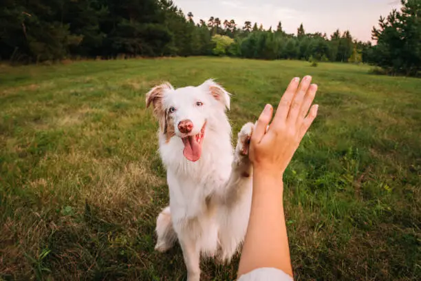

Every Lost Pet Deserves
a Way Home
Join our community of 5,000+ volunteers reuniting lost pets with their families across the country.
Lost a Pet? Don't Panic.
Report instantly and our network of volunteers will help you find them.
About Paws & Found
Founded in 2024, Paws & Found is a community-driven platform dedicated to reuniting lost pets with their families. Our volunteers work tirelessly to ensure that every lost pet finds its way home.
We believe that pets are family, and no one should have to face the heartbreak of losing a beloved companion alone. Join us in our mission to make sure every lost pet has a chance to come back home.
Why We Do What We Do
To reunite lost pets with their families
Our Mission
To reunite lost pets with their families through community-driven efforts and technology.
Our Vision
A world where every lost pet finds its way home and no family experiences the pain of losing a pet.
Our Values
Compassion, Community and Commitment to every pet and family that needs our help.
1,247
Pets Reunited
5,832
Active Volunteers
156
Cities Covered
48hrs
Avg. Recovery Time
Urgently Missing Pets !!
These pets need your help to find their way home

Max
Highland Park
Golden Retriever • Lost June 10

Sarah M.
Reunited with Max 🐕
"I never thought I'd see Max again. After 3 long days, Paws & Found helped me find my best friend. The volunteers were amazing and never gave up. Thank you from the bottom of my heart!"